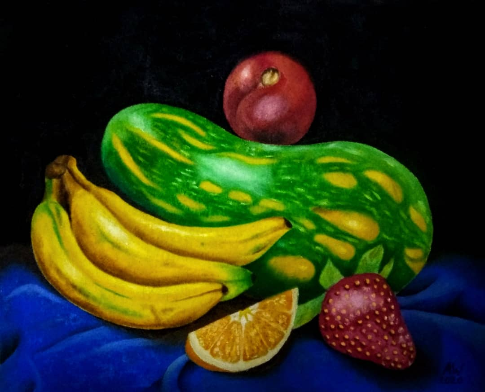
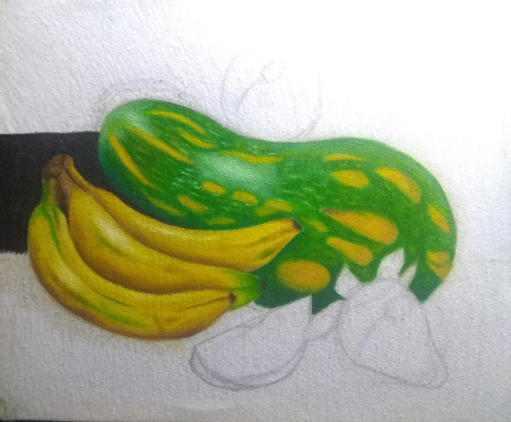
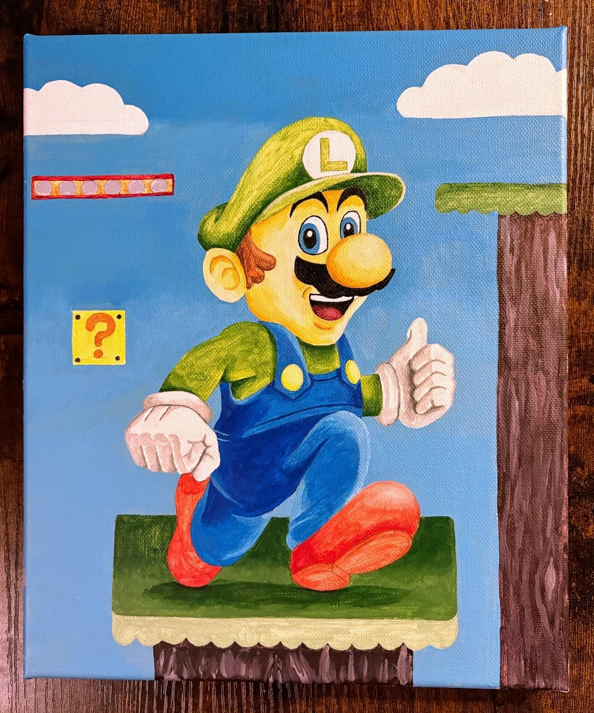
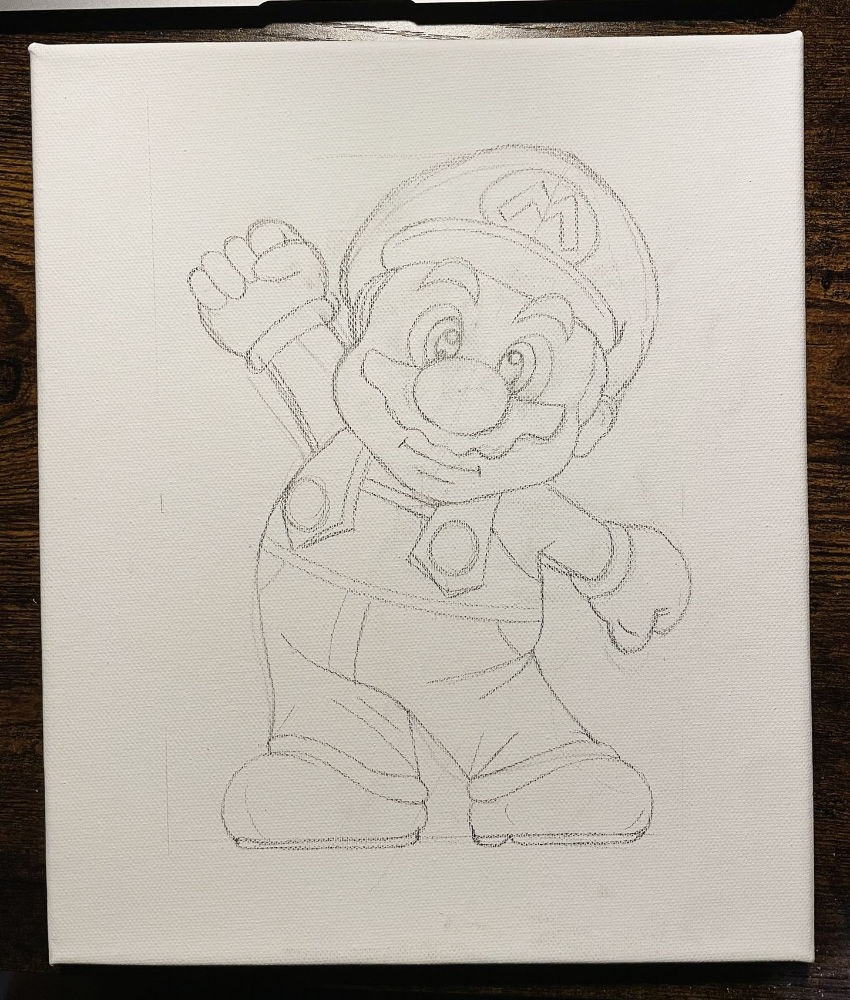
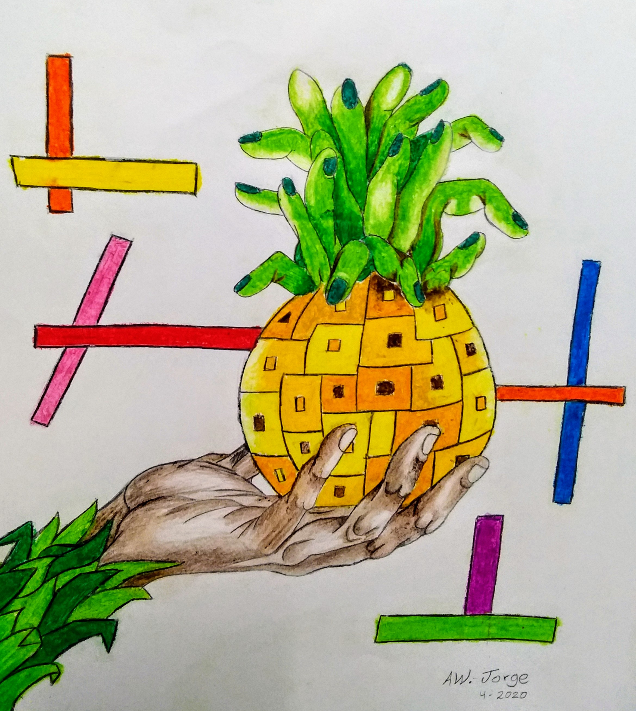
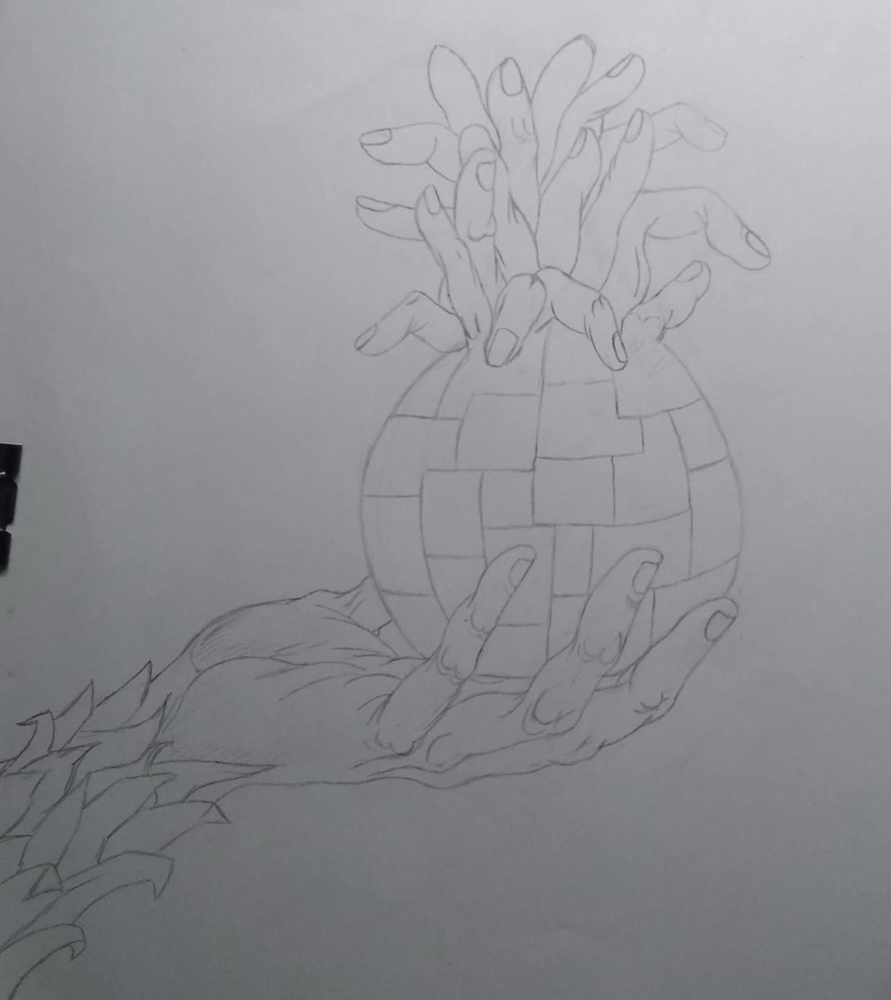

Oil Process
Before/after comparison for one of the oil works.


Studio Process
A dedicated page for process work: before/after comparisons, layered studies, and video-based painting evolution.
Studio Notes
This page keeps the gallery focused on finished work while gathering the construction, layering, and comparison material in one place.
Before/after comparison for one of the oil works.


Video overlays and sliding comparisons for acrylic pieces.




A process comparison for the pastel series.

